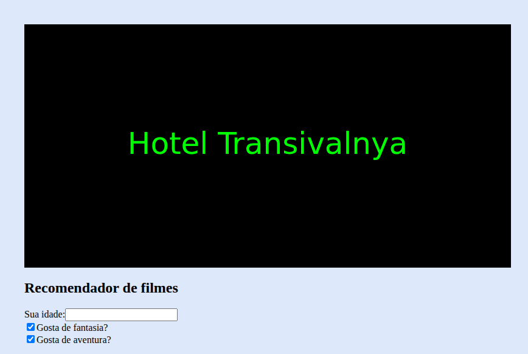

Meus projetos
Meu site: A história da Playstation
Este projeto é uma página web que apresenta a famosa empresa Playstation,falando sobre sua história, pessoas importantes para sua criação, seus lançamentos e impactos na indústria de jogos.

Layout: Flamengo
Este projeto é um layout sobre meu time de coração, o Clube de Regatas do Flamengo,apresenta uma lista de dez jogadores do Flamengo. Foi feito com HTML e estilizado com CSS.

Indicador de Filmes
Este projeto apresenta um recomendador de filmes, onde você digita sua idade e ele te recomenda um filme. Feito com HTML e estilizado com CSS